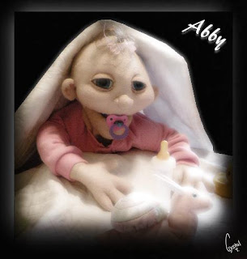

New arrival
6/9/2009
{kind=link}

Building character in a puppet is key to performance success. The Dummy Shop (Puppets by Jet) provide their customers a head start on puppet personality by annoucing them with a clever biography. Such as with their new character, Abbie.
Abbie's Biography
Abbie is a fun loving one (but almost two) year old little girl. She never meets a stranger. She is totally fascinated by anything that spins, such as ceiling fans, windmills, or the wheels on her big brothers tricycle. When Abbie gets very excited, she gets the hiccups.
Abbie puts EVERYTHING into her mouth. She seems to believe that she can learn the most about an item if it is in her mouth. She enjoys looking at herself in the mirror. She thinks that she is just the cutest thing.
Abbie is an unusual little girl, because unlike her siblings, she enjoys going to the Doctors office. When she arrives at the Doctors, she is the absolute center of attention in the waiting room and when she goes to the examining room, she loves to play with anything that she can reach. Her favorite thing is to play with the Doctor's stethoscope. Lots of interesting sounds to hear. But the most important thing about the Doctors office is that the nurse always lets her pick a sucker from the big bowl of suckers on her desk. It requires a keen mind to know which one of the brightly colored suckers to pick. This is especially fun because Mommy does not let her have a lot of candy since sugar tends to make her a little too "happy".
Abbie just loves sitting on someones knee, listening intently to every word that they say. You would almost think that she understands everything you are talking about from the way her great big blue eyes light up when you talk to her.
* * * * *
You may contact The Dummy Shop at: dummylady01@gmail.com
Abbie puts EVERYTHING into her mouth. She seems to believe that she can learn the most about an item if it is in her mouth. She enjoys looking at herself in the mirror. She thinks that she is just the cutest thing.
Abbie is an unusual little girl, because unlike her siblings, she enjoys going to the Doctors office. When she arrives at the Doctors, she is the absolute center of attention in the waiting room and when she goes to the examining room, she loves to play with anything that she can reach. Her favorite thing is to play with the Doctor's stethoscope. Lots of interesting sounds to hear. But the most important thing about the Doctors office is that the nurse always lets her pick a sucker from the big bowl of suckers on her desk. It requires a keen mind to know which one of the brightly colored suckers to pick. This is especially fun because Mommy does not let her have a lot of candy since sugar tends to make her a little too "happy".
Abbie just loves sitting on someones knee, listening intently to every word that they say. You would almost think that she understands everything you are talking about from the way her great big blue eyes light up when you talk to her.
* * * * *
You may contact The Dummy Shop at: dummylady01@gmail.com